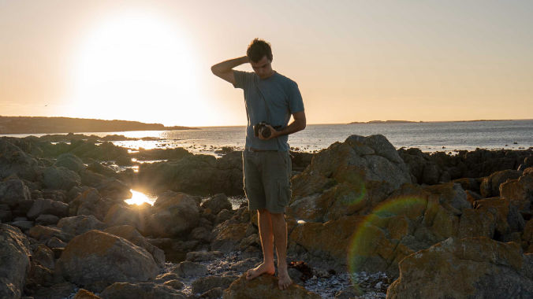

Storytelling through video is one of the most powerful ways to communicate your brand message. At Munjiri Videos, we believe that every brand has a unique story waiting to be told and video is the perfect medium to do it. This blog will guide you through 10 actionable steps to craft an emotional, engaging, and memorable brand story using video.
Stories connect people. When combined with video, the best medium for evoking emotions, your brand message becomes even more impactful. A well-told video story helps:
Build trust with your audience
Differentiate your brand from competitors
Create emotional connections with customers
Increase brand awareness and loyalty
Boost conversions and engagement rates
According to studies, people remember 95% of a message when they watch it in a video compared to only 10% when reading it. This makes video storytelling one of the most effective marketing strategies for brands today.
If you're ready to create a brand story that people remember, here are 10 steps to telling your brand story with video.
Ask yourself: Why does your brand exist? What passion drives your business? Your purpose should be rooted in solving a problem or helping your customers.
How to Define Your Purpose:
Gather your team
Write down what your brand means to each person
Identify common themes
Narrow it down to 5 core values
Align your purpose with your customers' needs
A clear purpose will be the foundation of your entire brand story.
Your story should resonate with your audience's needs, desires, and emotions.
How to Understand Your Audience:
Who are your audience?
What are their pain points?
What motivates them?
Chat to them! What questions do they ask your for help with?
Think about your feedback and testimonials
Knowing your audience helps you craft stories that genuinely connect with them.


Great brand stories are problem-based. Pinpoint the main problem your audience struggles with and position your brand as the solution.
Example:
If you're an organic farm, the problem could be your audience can't find fruit and veg that hasn't been sprayed with loads of chemicals.
How to Find the Problem:
List common challenges your customers face
Chat with them
Highlight the emotional impact of the problem
Your story will feel more relatable if it's based on a real struggle your audience faces.
Emotions drive decisions. Your story should evoke feelings like happiness, empathy, or excitement.
How to Build Emotional Connections:
Use real customer stories
Highlight transformations
Show behind-the-scenes moments
Use music and visuals
Emotional stories help customers connect with your brand on a deeper level.


Your story should stand out from the competition.
Tips for a Unique Narrative:
Use a different perspective
Incorporate humor or nostalgia
Add a personal touch by featuring your team or customers
Unique stories make your brand memorable and more relatable.
See How We’ve Helped Other Brands Tell Their Stories
Before production, think about or create a moodboard with:
Colors
Music
Visual styles
Locations
Voiceover styles
This helps align your video with your brand personality and ensures consistency.


Video is a visual medium, let the imagery speak.
How to Show Your Story:
Use powerful visuals
Keep narration minimal
Focus on emotions through expressions and actions
Add sound effects and music to enhance the mood
A visually-led story is more engaging and leaves a lasting impact.
The style of your video should match your brand.
Types of Brand Videos:
Documentary
Narrative story
Explainer video
Testimonial video
Behind-the-scenes video
Choose the style that best fits your brand personality and the message you want to convey.
Discover More Video Tips


Imagine replacing your logo with your competitor’s. If the video still works for them, your story isn't unique enough. Go back and refine your idea.
How to Pass the Logo Test:
Ensure your brand's core values are visible
Use distinct visuals and music
Focus on what makes your brand different
A unique story will always be identifiable even without your logo.


Finally, pull everything together into a video script. Structure your script like this:
Hook
Problem
Solution
Emotional payoff
Call to action
Bonus Tip:
Keep your script conversational and authentic to maintain your audience's interest. Imagine you are talking with a friend.
Why is video storytelling important for brands?
Video storytelling helps brands build emotional connections, engage audiences, and stand out from competitors.
How long should a brand story video be?
Aim for 60–90 seconds to keep your audience engaged without losing their attention.
What kind of videos work best for brand storytelling?
Narrative stories, documentaries, and customer testimonials often work best to convey brand messages.
How much does it cost to create a brand story video?
Costs vary depending on length, style, and production quality.
How can Munjiri Videos help with my brand story video?
We specialize in creating engaging brand story videos that reflect your unique values and message. From concept to production, we'll guide you every step of the way.
Learn More About Munjiri Videos

Your brand story has the power to captivate, inspire, and build lasting connections with your audience. By following these 10 actionable steps, you'll create a video that not only tells your story but also helps your brand stand out.
At Munjiri Videos, we know that stories have the power to change how people see things. That’s why we don’t just create videos, we create stories that bring brands to life. Our process is collaborative, personal, and always rooted in your brand’s mission.
Whether you're a small business championing sustainability or a non-profit making a difference, we’re here to help you tell your story with heart and purpose.
Ready to bring your brand story to life? Get in touch with us today and let's create something amazing!
Get Started with Professional Video Production

Brand Video Production
Social Media Video Production
Nature Video Production
Creative Video Productions
Charity Video Production
Drone Videographer
Event Video Production
Product Video Production
Travel Video Production
Learn Video Making
Video Storytelling
Video Making Tips
Video Marketing & Social Media Strategies
Nature Stories
Behind the Scenes
Client Stories
Locations & Travel
Location
Based in Portugal and South Africa, offering video production services worldwide.
Email: katy@munjiri.com
Get updates and free resources.